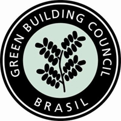

A Ambientale Verte
Olá, seja
bem-vindo ao site da AMBIENTALE VERTE, uma empresa de engenharia e
consultoria que atua em vários segmentos da área
ambiental. Nossa empresa tem como principal objetivo auxiliar nossos
clientes no desenvolvimento de um novo modelo de atuação
empresarial, baseado na sustentabilidade. Acompanhamos nossos clientes
desde a fase de planejamento até a fase de
operação de seus projetos e empreendimentos.
A Ambientale Verte é reconhecida pelas três árvores
que compõem sua logomarca. Essas árvores representam a
harmonia e interação entre as três esferas do
desenvolvimento sustentável: a sustentabilidade econômica,
a social e a ambiental.
Os serviços oferecidos pela AMBIENTALE VERTE estão
concentrados em três áreas principais de
atuação: Licenciamento Ambiental, Gestão de
Projetos e Construção Sustentável -
Certificação AQUA / LEED. Para saber mais detalhes,
clique em Serviços.
